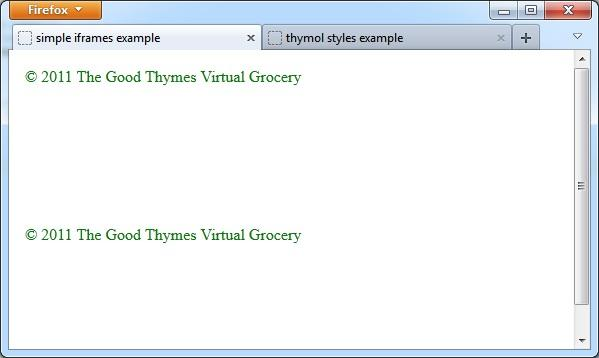
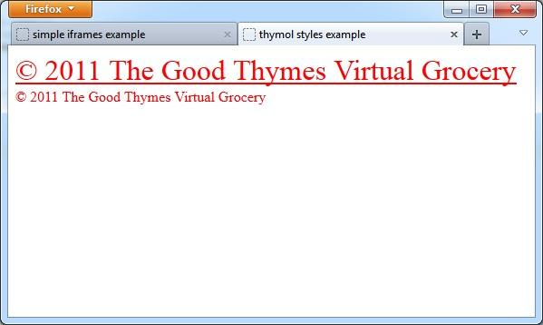

static imports
One way to work with include(d) content in Thymeleaf is to use the "iframe body" technique, this uses an html <iframe> element as the static content (body) of all document elements with th:include.
<!-- iframe example -->
<p th:include="./frames/menu::menu" >
<iframe src="./frames/menu.html">Your browser does not support iframes</iframe>
</p>
A browser that supports the use of <iframe> elements should render this html snippet with the entire content of the iframe src file embedded within the <p> element.
To remove the iframe border and to prevent displaying scroll-bars you can use the following css style in the enclosing document:
body iframe {
border-style: none;
margin: 0px;
overflow-y: visible;
}
The "iframe body" technique behaves in a way similar to the "complete template" th:include mechanism (see Using Thymeleaf section "8.1 Including template fragments").
With this in mind, you should define only a single th:fragment in the included template, otherwise the static iframe view and the online dynamic view are likely to be different.
It should be pointed out that this technique will not work with th:replace (substituteby) as there is no way to statically replace the containing element (the <p> element in the example above).
With these provisos, the iframe method can be a useful work-around. There is however another serious disadvantage in this approach:
When fragments are inserted using th:include or th:replace (substituteby) in an online page, the end user's browser sees this content in the context of the css styles in force where the fragments are embedded in the DOM. For the static view this won't happen automatically, the styles applied to iframe content are only those defined in the iframe html source file.
To illustrate the issue, consider this template:
<!--footer.html-->
<!DOCTYPE html>
<html xmlns="http://www.w3.org/1999/xhtml" xmlns:th="http://www.thymeleaf.org">
<body>
<div th:fragment="copy" style="color: green;">© 2011 The Good Thymes Virtual Grocery</div>
</body>
</html>
We include this in an enclosing page:
<!--iframe-usage.html-->
<!DOCTYPE html>
<html xmlns="http://www.w3.org/1999/xhtml" xmlns:th="http://www.thymeleaf.org">
<head>
<title>simple iframes example</title>
<style type="text/css">
.red-text {color:red;}
.big-text {font-size:xx-large;}
.underlined-text {text-decoration:underline;}
body iframe {border-style: none; margin: 0px; overflow-y: visible;}
</style>
</head>
<body>
<div class="red-text">
<div class="big-text">
<div class="underlined-text">
<div th:include="footer::copy">
<iframe src="footer.html">Your browser does not support iframes</iframe>
</div>
</div>
</div>
<div th:include="footer::copy">
<iframe src="footer.html">Your browser does not support iframes</iframe>
</div>
</div>
</body>
</html>
When the page is rendered we find that the nested styles that should be applied to the content of the inner <div> are not applied to the imported content.

For a site with many pages, many included fragments and many styles the amount of work required to ensure a consistent view of static and dynamic templates soon becomes unfeasible.
Thymol was originally devised to solve this. Thymol allows you to use th:include and/or th:replace (substituteby) and maintain consistency between static and dynamic view with minimal effort.
Thymol uses javascript and jquery to identify, load and embed the fragments into the DOM in the static view, simulating the way Thymeleaf does this for you in the dynamic view.
usage
Simply download the Thymol distribution file here and follow the instructions here.
Insert the following (or something similar) in your html source:
<!-- embed example -->
<script th:remove="all" type="text/javascript" src="<path-to-thymol>thymol.js"></script>If you have bower installed (see here), setting up Thymol is even easier, simply execute:
bower install thymol
in your project root directory and use the following script import line in your templates:
<!-- bower example -->
<script th:remove="all" type="text/javascript" src="bower_components/thymol/dist/thymol.js"></script>example
Here is the footer example, re-worked slightly to use Thymol:
<!--thymol-usage.html-->
<!DOCTYPE html>
<html xmlns="http://www.w3.org/1999/xhtml" xmlns:th="http://www.thymeleaf.org">
<head>
<title>thymol styles example</title>
<style type="text/css">
.red-text {color:red;}
.big-text {font-size:xx-large;}
.underlined-text {text-decoration:underline;}
</style>
</head>
<script th:remove="all" type="text/javascript" src="bower_components/thymol/dist/thymol.js"></script>
<body>
<div class="red-text">
<div class="big-text">
<div class="underlined-text">
<div th:include="footer::copy">
cannot load template: footer, fragment: copy
</div>
</div>
</div>
<div th:include="footer::copy">
cannot load template: footer, fragment: copy
</div>
</div>
</body>
</html>
When the Thymol enhanced page is rendered we find that the nested styles are applied to the imported content as intended!
